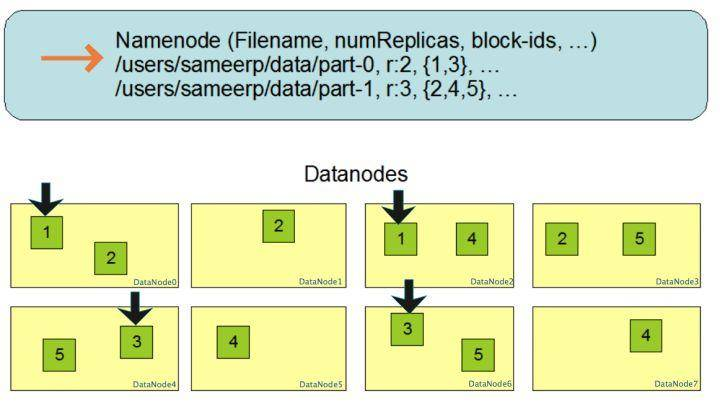
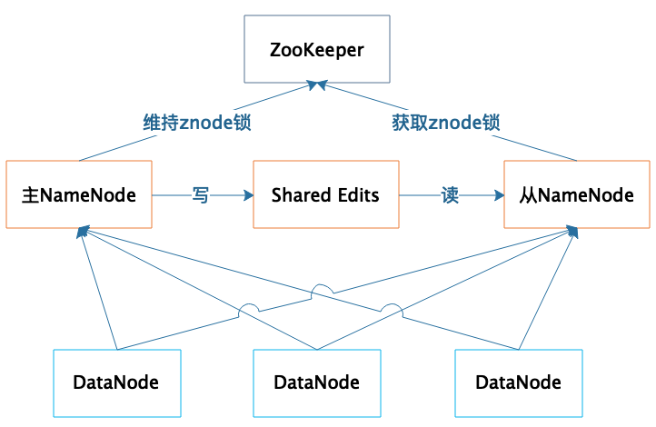

06 | 新技术层出不穷，HDFS依然是存储的王者
我们知道，Google 大数据“三驾马车”的第一驾是 GFS（Google 文件系统），而 Hadoop 的第一个产品是 HDFS，可以说分布式文件存储是分布式计算的基础，也可见分布式文件存储的重要性。如果我们将大数据计算比作烹饪，那么数据就是食材，而 Hadoop 分布式文件系统 HDFS 就是烧菜的那口大锅。
厨师来来往往，食材进进出出，各种菜肴层出不穷，而不变的则是那口大锅。大数据也是如此，这些年来，各种计算框架、各种算法、各种应用场景不断推陈出新，让人眼花缭乱，但是大数据存储的王者依然是 HDFS。
为什么 HDFS 的地位如此稳固呢？在整个大数据体系里面，最宝贵、最难以代替的资产就是数据，大数据所有的一切都要围绕数据展开。HDFS 作为最早的大数据存储系统，存储着宝贵的数据资产，各种新的算法、框架要想得到人们的广泛使用，必须支持 HDFS 才能获取已经存储在里面的数据。所以大数据技术越发展，新技术越多，HDFS 得到的支持越多，我们越离不开 HDFS。HDFS 也许不是最好的大数据存储技术，但依然最重要的大数据存储技术。
那我们就从 HDFS 的原理说起，今天我们来聊聊HDFS 是如何实现大数据高速、可靠的存储和访问的。
Hadoop 分布式文件系统 HDFS 的设计目标是管理数以千计的服务器、数以万计的磁盘，将这么大规模的服务器计算资源当作一个单一的存储系统进行管理，对应用程序提供数以 PB 计的存储容量，让应用程序像使用普通文件系统一样存储大规模的文件数据。
如何设计这样一个分布式文件系统？其实思路很简单。
我们先复习一下专栏上一期，我讲了 RAID 磁盘阵列存储，RAID 将数据分片后在多块磁盘上并发进行读写访问，从而提高了存储容量、加快了访问速度，并通过数据的冗余校验提高了数据的可靠性，即使某块磁盘损坏也不会丢失数据。将 RAID 的设计理念扩大到整个分布式服务器集群，就产生了分布式文件系统，Hadoop 分布式文件系统的核心原理就是如此。
和 RAID 在多个磁盘上进行文件存储及并行读写的思路一样，HDFS 是在一个大规模分布式服务器集群上，对数据分片后进行并行读写及冗余存储。因为 HDFS 可以部署在一个比较大的服务器集群上，集群中所有服务器的磁盘都可供 HDFS 使用，所以整个 HDFS 的存储空间可以达到 PB 级容量。
上图是 HDFS 的架构图，从图中你可以看到 HDFS 的关键组件有两个，一个是 DataNode，一个是 NameNode。
DataNode 负责文件数据的存储和读写操作，HDFS 将文件数据分割成若干数据块（Block），每个 DataNode 存储一部分数据块，这样文件就分布存储在整个 HDFS 服务器集群中。应用程序客户端（Client）可以并行对这些数据块进行访问，从而使得 HDFS 可以在服务器集群规模上实现数据并行访问，极大地提高了访问速度。
在实践中，HDFS 集群的 DataNode 服务器会有很多台，一般在几百台到几千台这样的规模，每台服务器配有数块磁盘，整个集群的存储容量大概在几 PB 到数百 PB。
NameNode 负责整个分布式文件系统的元数据（MetaData）管理，也就是文件路径名、数据块的 ID 以及存储位置等信息，相当于操作系统中文件分配表（FAT）的角色。HDFS 为了保证数据的高可用，会将一个数据块复制为多份（缺省情况为 3 份），并将多份相同的数据块存储在不同的服务器上，甚至不同的机架上。这样当有磁盘损坏，或者某个 DataNode 服务器宕机，甚至某个交换机宕机，导致其存储的数据块不能访问的时候，客户端会查找其备份的数据块进行访问。
下面这张图是数据块多份复制存储的示意，图中对于文件 /users/sameerp/data/part-0，其复制备份数设置为 2，存储的 BlockID 分别为 1、3。Block1 的两个备份存储在 DataNode0 和 DataNode2 两个服务器上，Block3 的两个备份存储 DataNode4 和 DataNode6 两个服务器上，上述任何一台服务器宕机后，每个数据块都至少还有一个备份存在，不会影响对文件 /users/sameerp/data/part-0 的访问。

和 RAID 一样，数据分成若干数据块后存储到不同服务器上，可以实现数据大容量存储，并且不同分片的数据可以并行进行读 / 写操作，进而实现数据的高速访问。你可以看到，HDFS 的大容量存储和高速访问相对比较容易实现，但是 HDFS 是如何保证存储的高可用性呢？
我们尝试从不同层面来讨论一下 HDFS 的高可用设计。
1. 数据存储故障容错
磁盘介质在存储过程中受环境或者老化影响，其存储的数据可能会出现错乱。HDFS 的应对措施是，对于存储在 DataNode 上的数据块，计算并存储校验和（CheckSum）。在读取数据的时候，重新计算读取出来的数据的校验和，如果校验不正确就抛出异常，应用程序捕获异常后就到其他 DataNode 上读取备份数据。
2. 磁盘故障容错
如果 DataNode 监测到本机的某块磁盘损坏，就将该块磁盘上存储的所有 BlockID 报告给 NameNode，NameNode 检查这些数据块还在哪些 DataNode 上有备份，通知相应的 DataNode 服务器将对应的数据块复制到其他服务器上，以保证数据块的备份数满足要求。
3.DataNode 故障容错
DataNode 会通过心跳和 NameNode 保持通信，如果 DataNode 超时未发送心跳，NameNode 就会认为这个 DataNode 已经宕机失效，立即查找这个 DataNode 上存储的数据块有哪些，以及这些数据块还存储在哪些服务器上，随后通知这些服务器再复制一份数据块到其他服务器上，保证 HDFS 存储的数据块备份数符合用户设置的数目，即使再出现服务器宕机，也不会丢失数据。
4.NameNode 故障容错
NameNode 是整个 HDFS 的核心，记录着 HDFS 文件分配表信息，所有的文件路径和数据块存储信息都保存在 NameNode，如果 NameNode 故障，整个 HDFS 系统集群都无法使用；如果 NameNode 上记录的数据丢失，整个集群所有 DataNode 存储的数据也就没用了。
所以，NameNode 高可用容错能力非常重要。NameNode 采用主从热备的方式提供高可用服务，请看下图。

集群部署两台 NameNode 服务器，一台作为主服务器提供服务，一台作为从服务器进行热备，两台服务器通过 ZooKeeper 选举，主要是通过争夺 znode 锁资源，决定谁是主服务器。而 DataNode 则会向两个 NameNode 同时发送心跳数据，但是只有主 NameNode 才能向 DataNode 返回控制信息。
正常运行期间，主从 NameNode 之间通过一个共享存储系统 shared edits 来同步文件系统的元数据信息。当主 NameNode 服务器宕机，从 NameNode 会通过 ZooKeeper 升级成为主服务器，并保证 HDFS 集群的元数据信息，也就是文件分配表信息完整一致。
对于一个软件系统而言，性能差一点，用户也许可以接受；使用体验差，也许也能忍受。但是如果可用性差，经常出故障导致不可用，那就比较麻烦了；如果出现重要数据丢失，那开发工程师绝对是摊上大事了。
而分布式系统可能出故障地方又非常多，内存、CPU、主板、磁盘会损坏，服务器会宕机，网络会中断，机房会停电，所有这些都可能会引起软件系统的不可用，甚至数据永久丢失。
所以在设计分布式系统的时候，软件工程师一定要绷紧可用性这根弦，思考在各种可能的故障情况下，如何保证整个软件系统依然是可用的。
根据我的经验，一般说来，常用的保证系统可用性的策略有冗余备份、失效转移和降级限流。虽然这 3 种策略你可能早已耳熟能详，但还是有一些容易被忽略的地方。
比如冗余备份，任何程序、任何数据，都至少要有一个备份，也就是说程序至少要部署到两台服务器，数据至少要备份到另一台服务器上。此外，稍有规模的互联网企业都会建设多个数据中心，数据中心之间互相进行备份，用户请求可能会被分发到任何一个数据中心，即所谓的异地多活，在遭遇地域性的重大故障和自然灾害的时候，依然保证应用的高可用。
当要访问的程序或者数据无法访问时，需要将访问请求转移到备份的程序或者数据所在的服务器上，这也就是失效转移。失效转移你应该注意的是失效的鉴定，像 NameNode 这样主从服务器管理同一份数据的场景，如果从服务器错误地以为主服务器宕机而接管集群管理，会出现主从服务器一起对 DataNode 发送指令，进而导致集群混乱，也就是所谓的“脑裂”。这也是这类场景选举主服务器时，引入 ZooKeeper 的原因。ZooKeeper 的工作原理，我将会在后面专门分析。
当大量的用户请求或者数据处理请求到达的时候，由于计算资源有限，可能无法处理如此大量的请求，进而导致资源耗尽，系统崩溃。这种情况下，可以拒绝部分请求，即进行限流；也可以关闭部分功能，降低资源消耗，即进行降级。限流是互联网应用的常备功能，因为超出负载能力的访问流量在何时会突然到来，你根本无法预料，所以必须提前做好准备，当遇到突发高峰流量时，就可以立即启动限流。而降级通常是为可预知的场景准备的，比如电商的“双十一”促销，为了保障促销活动期间应用的核心功能能够正常运行，比如下单功能，可以对系统进行降级处理，关闭部分非重要功能，比如商品评价功能。
我们小结一下，看看 HDFS 是如何通过大规模分布式服务器集群实现数据的大容量、高速、可靠存储、访问的。
1. 文件数据以数据块的方式进行切分，数据块可以存储在集群任意 DataNode 服务器上，所以 HDFS 存储的文件可以非常大，一个文件理论上可以占据整个 HDFS 服务器集群上的所有磁盘，实现了大容量存储。
2.HDFS 一般的访问模式是通过 MapReduce 程序在计算时读取，MapReduce 对输入数据进行分片读取，通常一个分片就是一个数据块，每个数据块分配一个计算进程，这样就可以同时启动很多进程对一个 HDFS 文件的多个数据块进行并发访问，从而实现数据的高速访问。关于 MapReduce 的具体处理过程，我们会在专栏后面详细讨论。
3.DataNode 存储的数据块会进行复制，使每个数据块在集群里有多个备份，保证了数据的可靠性，并通过一系列的故障容错手段实现 HDFS 系统中主要组件的高可用，进而保证数据和整个系统的高可用。
今天留一道有意思的思考题，你可以先想象一个场景，我们想利用全世界的个人电脑、手机、平板上的空闲存储空间，构成一个可以付费共享的分布式文件系统，希望用户可以安装一个 App 在自己的个人设备上，将个人资料安全地存储到这个分布式文件系统中，并支付一定费用；用户也可以用这个 App 将自己设备上的空闲存储空间共享出去，成为这个分布式文件系统存储的一部分，并收取一定费用。
我想问你的是，如果是你来设计这个分布式文件系统，你是怎么思考的？你的设计方案是什么？